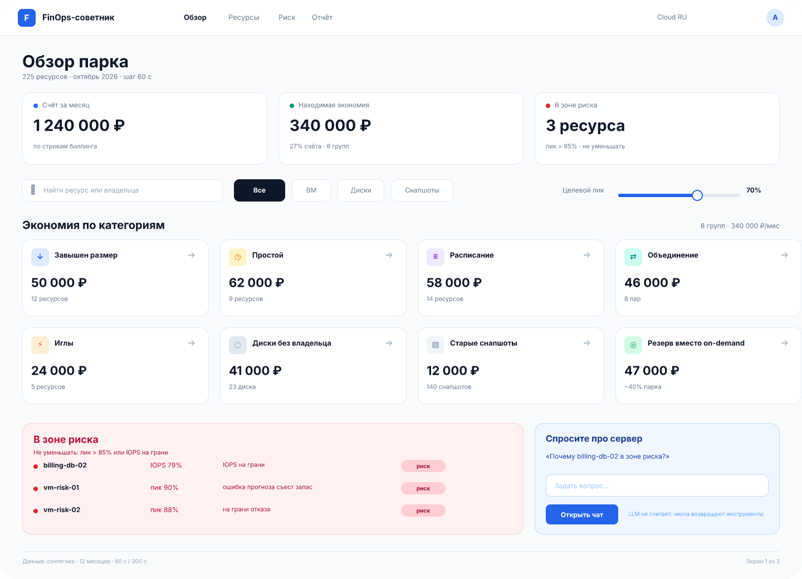
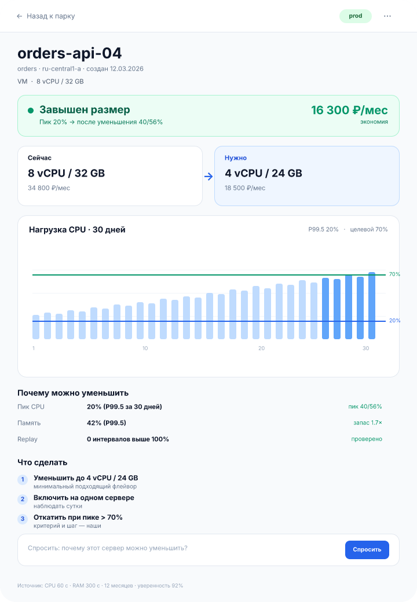
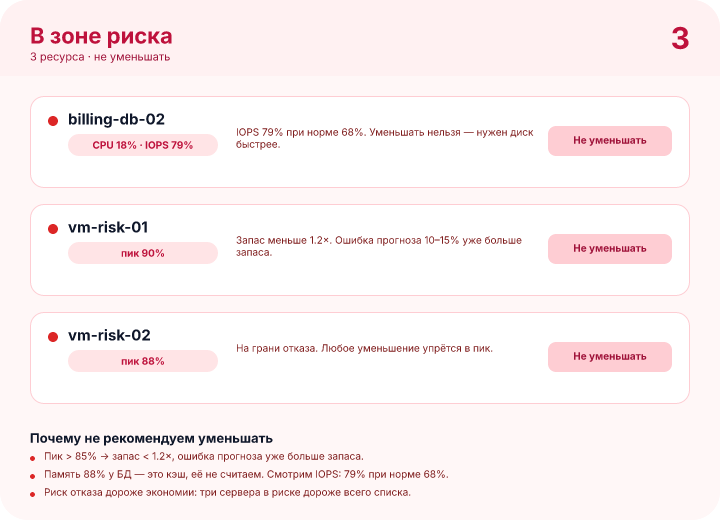

Счёт растёт быстрее нагрузки
Ресурсы добавляли под задачи, а потом задачи закончились. Мощности остались.
FinOps-советник для облака
«Облачный ревизор» анализирует счёт и историю метрик, показывает, какие ресурсы уменьшить, сколько это сэкономит и чем грозит. Для облачных провайдеров и их клиентов.

Проблема
Компании держат избыточные мощности, не берут резервы, забывают диски и снапшоты. По отраслевым оценкам, 23–40% облачных расходов в российских компаниях — избыточное потребление.
Ресурсы добавляли под задачи, а потом задачи закончились. Мощности остались.
Средняя загрузка 12% ничего не говорит о пике в 90% в час отчёта.
Вдруг в пик всё упадёт. Нет ответа, чем именно грозит изменение.
А у команды только графики и выгрузки, а не решение с суммой.
Решение
Четыре блока превращают сырые данные в отчёт, по которому можно действовать. Числа считает код, языковая модель только формулирует — она не может изменить сумму экономии.
CSV, Parquet или read-only API. Один канонический формат, пропуск не считается нулём.
P99.5, тренд, суточный профиль, длительность пиков, форма RAM, корреляция CPU и запросов.
Размер, простой, расписание, объединение, «иглы», диски, снапшоты, резервы и отдельный блок риска.
Что видим → вердикт → экономия ₽/мес → что сделать → риск → уверенность.
Отчёт, дашборд и PDF с одинаковыми цифрами. Плюс what-if и диалог по карточке ресурса.
Демо
Демонстрационный синтетический парк: 225 ресурсов, счёт 1,24 млн ₽/мес. Три экрана — обзор, карточка ресурса и блок риска.
Обзор: 340 000 ₽/мес экономии по 8 группам. Красным — ресурсы, которые нельзя уменьшать.

Карточка: почему ресурс можно уменьшить, сколько это даст и что проверить перед изменением.

Блок риска: три ресурса, которые трогать нельзя, и причина для каждого.
Цифры на экранах — синтетический демонстрационный парк, а не результат внедрения у клиента.
Кому
White-label отчёт под вашим брендом: повод для разговора с клиентом, удержание и отличие от конкурентов.
Аудит облачного счёта за 5 дней, план экономии и повторяемый процесс для банков, ритейла, телекома и промышленности.
Безопасность
Продукт не меняет инфраструктуру и не требует доступа на запись. Всё, что нужно для отчёта, — счёт и метрики.
Вопросы
Нет. Мы находим и обосновываем экономию, а решение и внедрение остаются за вами. На пилоте фиксируем, сколько рекомендаций реально внедрено.
Нет. Минимальный пакет — счёт за 3+ месяца, CPU и RAM с шагом 5 минут за 30 дней, цены и часовой пояс. Доступ только на чтение.
5 рабочих дней после получения данных. Пилот с проверкой рекомендаций — 4–5 недель.
Система честно скажет «недостаточно данных» и запросит конкретные срезы. Пустой отчёт с красивыми цифрами мы не выдаём.
Нет. Мы работаем поверх нативных инструментов, умеем несколько облаков и отдаём провайдеру white-label слой решений.
Пилот
Бесплатный пилот на 4–5 недель. Разберём один клиентский парк или облачный счёт компании, покажем отчёт и зафиксируем метрики.
Или напишите напрямую: hello@cloudrevisor.ru